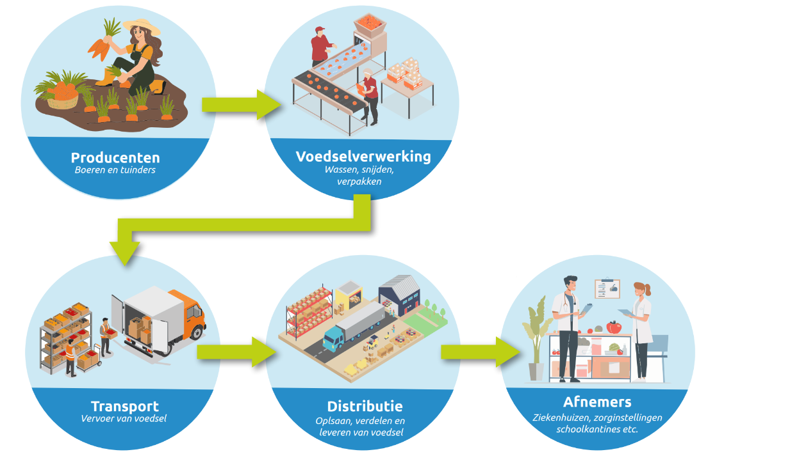

De voedselketen
Voedsel komt niet altijd rechtstreeks van de boer bij een afnemer of consument terecht. Vaak zijn er verschillende tussenstappen nodig voordat producten gebruikt kunnen worden. Denk hierbij aan het wassen, verpakken, vervoeren en opslaan van voedsel.
Het onderstaande overzicht laat zien welke stappen voedsel kan doorlopen van producent tot uiteindelijke afnemer.
Let op, niet ieder product doorloopt dezelfde route. Een boer kan er bijvoorbeeld ook voor kiezen om de eigen producten te verkopen in een boerderijwinkel. Dit wordt ook wel een korte keten genoemd.
Stappen van producent tot afnemer

Uitdagingen voor de voedselketen
Voedsel van regionale boeren naar grote afnemers zoals ziekenhuizen en zorginstellingen krijgen is niet altijd eenvoudig. Deze instellingen hebben het hele jaar door grote hoeveelheden voedsel nodig. Dat brengt een aantal uitdagingen met zich mee:
- Hoeveelheid: Een individuele boer kan misschien niet genoeg producten leveren om een grote instelling te bevoorraden.
- Wisselend aanbod: De hoeveelheid en variatie van producten kan per seizoen veranderen.
- Opslaglocaties: Verse producten moeten vaak gekoeld bewaard worden. Hiervoor zijn opslaglocaties nodig.
- Transport: Voedsel moet op tijd op de juiste locaties afgeleverd worden.